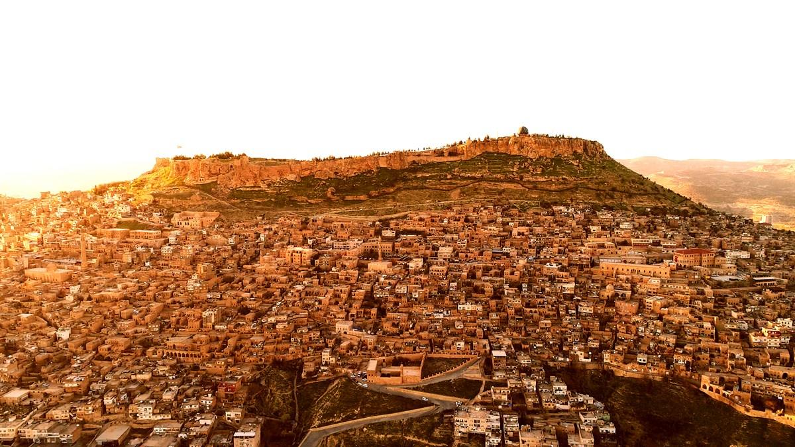
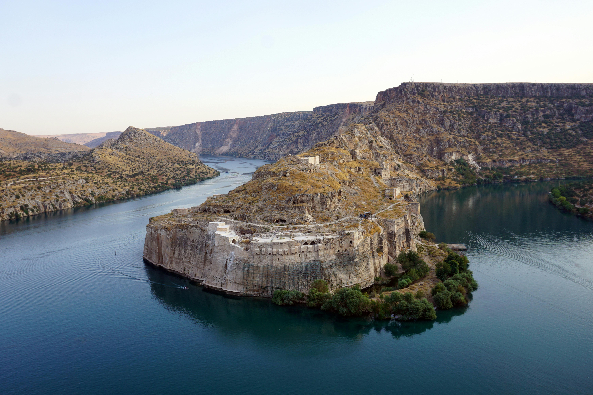
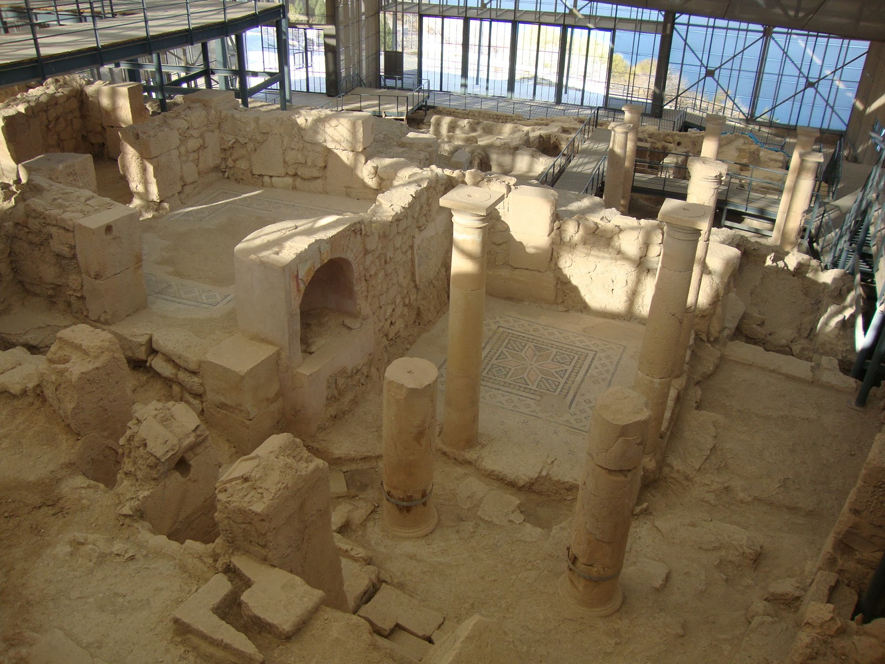

Güneydoğu Anadolu

Göbeklitepe
Şanlıurfa il merkezinin 18 km kuzeydoğusunda yer alan Göbeklitepe, günümüzden yaklaşık 12.000 yıl önce inşa edilmiş dünyanın bilinen en eski tapınak kompleksidir.
Detaylar için tıkla
Mardin Taş Evleri ve Dar Sokakları
Mezopotamya ovasına hakim bir yamaç üzerine kurulu olan Eski Mardin, sarı kalker taşından yapılmış eşsiz mimarisiyle dünyaca ünlüdür.
Detaylar için tıkla
Rumkale
Rumkale veya Urumgala Gaziantep'in Nizip ilçesi sınırları içinde bulunan ve günümüzde Nizip-Birecik Barajı gölünün oluşmasıyla doğmuş bir yarımadada yer alan tarihi kale.
Detaylar için tıkla
Zeugma Mozaik Müzesi
Gaziantep şehir merkezinde bulunan Zeugma Mozaik Müzesi, gerek bina büyüklüğü gerekse sergilenen eserlerin sanatsal değeri bakımından dünyanın en seçkin müzelerinden biridir.
Detaylar için tıkla